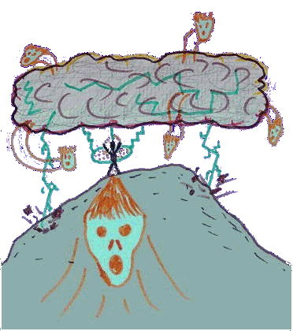

| |

| |

| |

| |

| |

|
In the bowels of Jukanti the fires burned vigourously as Gothan rose to another day in this hellish soul city. Jukanti was known only amongst those who had suffered their deaths apon the hands of the Evil Pun. This land was a place where all souls that had been killed by the Sceptre of Noone rested. Gothan was one of these unfortunate people. As he rose he already knew. His mental powers that had been bestowed apon him when he died told him that it was time. There was a pain in him, he knew that it was his task, but he was not sure. There had been legends upon legends on the sceptre's holder, that if it was once again revived, the holder would engulf apon him all the powers that had been felt before by all the sceptre's previous owners. He needed to find a way, hence he went to seek out the old one who was wise and had a knowledge far beyond any jukantiki let alone a mortal.
 He decided to take the path of eternal windyness and embarked
on the long journey to the caverns of the un-damned. These were a fearful
people, the souls of the innocent layed here and all they could do is moan
about their death. These have a strong vengence, they died for no reason,
ad they did not understand the importance of this land.
He decided to take the path of eternal windyness and embarked
on the long journey to the caverns of the un-damned. These were a fearful
people, the souls of the innocent layed here and all they could do is moan
about their death. These have a strong vengence, they died for no reason,
ad they did not understand the importance of this land.
During his journey, one of the Chant messengers appeared to him in a lance of telepathic ether. It gave him the name of the holder, Opus. It was a fitting name he thought to himself, Opus had in the past meant one that was filled with too much dignity too bear truth to anyone. He dilled apon the name and decided that he too would need a weapon of immense soulistic power. Grabbing his trusty Fork of Freedom, he decided that he must find the stone of severed souls before he went to the wise one. He divert his tactics and went upwards towards the peak of odours in the mountain ranges of the peaceful monks. He took shelter for 5 days in the monks temple where he learnt that with the power of the stone and the wisdom of the wise one he would be able to succeed against the fight. However he had also been told that no one had ever found the stone. The odour was so strong amongst the peak regions that many who were not strong enough had melted into pools of flesh and bone.
He was not swayed.
He could see the peak, what was that he saw, was it a figure. " Hey, are you alive?" no answer came from the figure. " hey, ...." the figure disappeared as he came closer to it.
He wondered could it be a sign from the old one. The old one was the half brother of the wise one only that he really was only half a soul. The other half had once been sliced off by one of the bearers of the sceptre. He had hence grown to become one of the only people to be able to give strategic hints on the possibly was in which the bearer could be killed.

He was getting weak, the outer layer of his armour had already been rusted to power by the odour, suddenly.... He saw it, there glimmering in a beam of light that seemed to come from the heavens. Rushing frenetically he lurched towards it like a child lurching for sweets, and when he touched it he felt the most overwhelming power beyond the realms of sexual excitement. 900,000 souls of the innnocent had streamed through the air rushing innto his body as one by one they filled him with such vengence that only could he rage in anger in the air until they had stopped. He felt the rage, the torment, the innocence that they had been holding all this time. He knew now he had a chance, but only with the wise one will he survive the first blow.Making his way down he found a cavern where he rested for several freep hours. He found food and water in a fridge that was specially built for icey cold mountain caves that was filled with nourishment that helped his journey.
Coming down from the mountain the wise one already knew, he was waiting there like a jaunting fellow. " You are the one" he said " With the power of the souls Gothan you will acheive the un-acheivable" " Gothan, remember this, Boo Ra, Jampar, Larrrrrr, ha!" With the last words fading into the distance he dissapeared. Now all Gothan had to do was find the gateway with which he was to return to the mortal kingdom, where was he to start?
 Story Index
Story Index |
top of page
 |

 Previous Chapter Previous Chapter |
Next Chapter  |